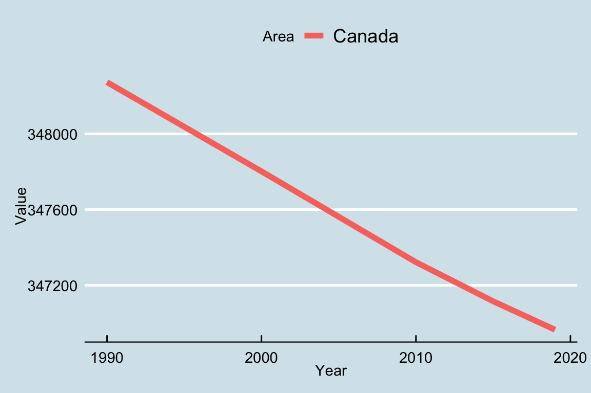

Chapter 4 Missing values
First lets check which of the three columns have missing values.
## 0
## 0
## 537Thus the third column that is Value has 537 missing values.
4.0.1 Countries with missing values
Now lets see which countries have these.
## Armenia, Azerbaijan, Belarus, Belgium, Belgium-Luxembourg,
## Bonaire, Sint Eustatius and Saba, Bosnia and Herzegovina, Channel Islands,
## China, Hong Kong SAR, China, Macao SAR, China, Taiwan Province of, Croatia,
## Curaçao, Czechia, Czechoslovakia, Eritrea, Estonia, Ethiopia, Ethiopia PDR,
## Georgia, Kazakhstan, Kyrgyzstan, Latvia, Lithuania, Luxembourg,
## Marshall Islands, Micronesia (Federated States of), Montenegro,
## North Macedonia, Northern Mariana Islands, Pacific Islands Trust Territory,
## Palau, Republic of Moldova, Russian Federation, Saint-Martin (French part),
## Serbia, Serbia and Montenegro, Sint Maarten (Dutch part), Slovakia, Slovenia,
## South Sudan, Sudan, Sudan (former), Tajikistan, Turkmenistan, Ukraine, USSR,
## Uzbekistan, Yugoslav SFR
4.0.2 Historical Context
Now comes the historical context to these missing values.
- Countries such as Armenia, Azerbaijan came into existence in 1991 so have data missing for 1991.
- Similarly the Soviet Union broke into 15 sovereign states. All 15 of which are in the above list.
- Other countries also follow the same logic. South Sudan came into existence in 2011. For the time being we shall delete these countries as they don’t affect our comparisons much.
- Even countries which broke into two separate countries have missing values for one of them.
- Countries which get annexed by other countries will also show an increase or decrease in overall forest land. For instance Israel keeps annexing some Palestine territory in the West Bank every 2 years or so or the Russian annexation of Crimea in 2014.
4.0.3 Irregularities
Countries such as Kuwait record their forest land area change every 5 years while other countries record it annually. This leads to a few missing values. In order to deal with these we take the most recent values for these years. This allows us to deal with the change in forest area efficiently. As change is 0 in such cases we can keep these countries aside and focus on those with a high rate of deforestation.